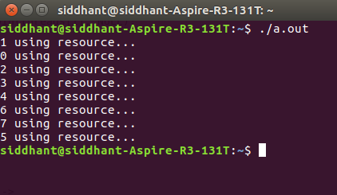

Prerequisite – Critical Section, Process Synchronization, Inter Process Communication
The Bakery algorithm is one of the simplest known solutions to the mutual exclusion problem for the general case of N process. Bakery Algorithm is a critical section solution for N processes. The algorithm preserves the first come first serve property.
- Before entering its critical section, the process receives a number. Holder of the smallest number enters the critical section.
- If processes Pi and Pj receive the same number,
if i < j Pi is served first; else Pj is served first.
- The numbering scheme always generates numbers in increasing order of enumeration; i.e., 1, 2, 3, 3, 3, 3, 4, 5, …
Notation – lexicographical order (ticket #, process id #) – Firstly the ticket number is compared. If same then the process ID is compared next, i.e.-
– (a, b) < (c, d) if a < c or if a = c and b < d – max(a [0], . . ., a [n-1]) is a number, k, such that k >= a[i] for i = 0, . . ., n - 1
Shared data – choosing is an array [0..n – 1] of boolean values; & number is an array [0..n – 1] of integer values. Both are initialized to False & Zero respectively.
Algorithm Pseudocode –
repeat
choosing[i] := true;
number[i] := max(number[0], number[1], ..., number[n - 1])+1;
choosing[i] := false;
for j := 0 to n - 1
do begin
while choosing[j] do no-op;
while number[j] != 0
and (number[j], j) < (number[i], i) do no-op;
end;
critical section
number[i] := 0;
remainder section
until false;
Explanation –
Firstly the process sets its “choosing” variable to be TRUE indicating its intent to enter critical section. Then it gets assigned the highest ticket number corresponding to other processes. Then the “choosing” variable is set to FALSE indicating that it now has a new ticket number. This is in-fact the most important and confusing part of the algorithm.
It is actually a small critical section in itself ! The very purpose of the first three lines is that if a process is modifying its TICKET value then at that time some other process should not be allowed to check its old ticket value which is now obsolete. This is why inside the for loop before checking ticket value we first make sure that all other processes have the “choosing” variable as FALSE.
After that we proceed to check the ticket values of processes where process with least ticket number/process id gets inside the critical section. The exit section just resets the ticket value to zero.
Code – Here’s the C code implementation of the Bakery Algorithm. Run the following in a UNIX environment –
// Importing the thread library
#include "pthread.h"
#include "stdio.h"
// Importing POSIX Operating System API library
#include "unistd.h"
#include "string.h"
// This is a memory barrier instruction.
// Causes compiler to enforce an ordering
// constraint on memory operations.
// This means that operations issued prior
// to the barrier will be performed
// before operations issued after the barrier.
#define MEMBAR __sync_synchronize()
#define THREAD_COUNT 8
volatile int tickets[THREAD_COUNT];
volatile int choosing[THREAD_COUNT];
// VOLATILE used to prevent the compiler
// from applying any optimizations.
volatile int resource;
void lock(int thread)
{
// Before getting the ticket number
//"choosing" variable is set to be true
choosing[thread] = 1;
MEMBAR;
// Memory barrier applied
int max_ticket = 0;
// Finding Maximum ticket value among current threads
for (int i = 0; i < THREAD_COUNT; ++i) {
int ticket = tickets[i];
max_ticket = ticket > max_ticket ? ticket : max_ticket;
}
// Allotting a new ticket value as MAXIMUM + 1
tickets[thread] = max_ticket + 1;
MEMBAR;
choosing[thread] = 0;
MEMBAR;
// The ENTRY Section starts from here
for (int other = 0; other < THREAD_COUNT; ++other) {
// Applying the bakery algorithm conditions
while (choosing[other]) {
}
MEMBAR;
while (tickets[other] != 0 && (tickets[other]
< tickets[thread]
|| (tickets[other]
== tickets[thread]
&& other < thread))) {
}
}
}
// EXIT Section
void unlock(int thread)
{
MEMBAR;
tickets[thread] = 0;
}
// The CRITICAL Section
void use_resource(int thread)
{
if (resource != 0) {
printf("Resource was acquired by %d, but is still in-use by %d!\n",
thread, resource);
}
resource = thread;
printf("%d using resource...\n", thread);
MEMBAR;
sleep(2);
resource = 0;
}
// A simplified function to show the implementation
void* thread_body(void* arg)
{
long thread = (long)arg;
lock(thread);
use_resource(thread);
unlock(thread);
return NULL;
}
int main(int argc, char** argv)
{
memset((void*)tickets, 0, sizeof(tickets));
memset((void*)choosing, 0, sizeof(choosing));
resource = 0;
// Declaring the thread variables
pthread_t threads[THREAD_COUNT];
for (int i = 0; i < THREAD_COUNT; ++i) {
// Creating a new thread with the function
//"thread_body" as its thread routine
pthread_create(&threads[i], NULL, &thread_body, (void*)((long)i));
}
for (int i = 0; i < THREAD_COUNT; ++i) {
// Reaping the resources used by
// all threads once their task is completed !
pthread_join(threads[i], NULL);
}
return 0;
}
Output:
